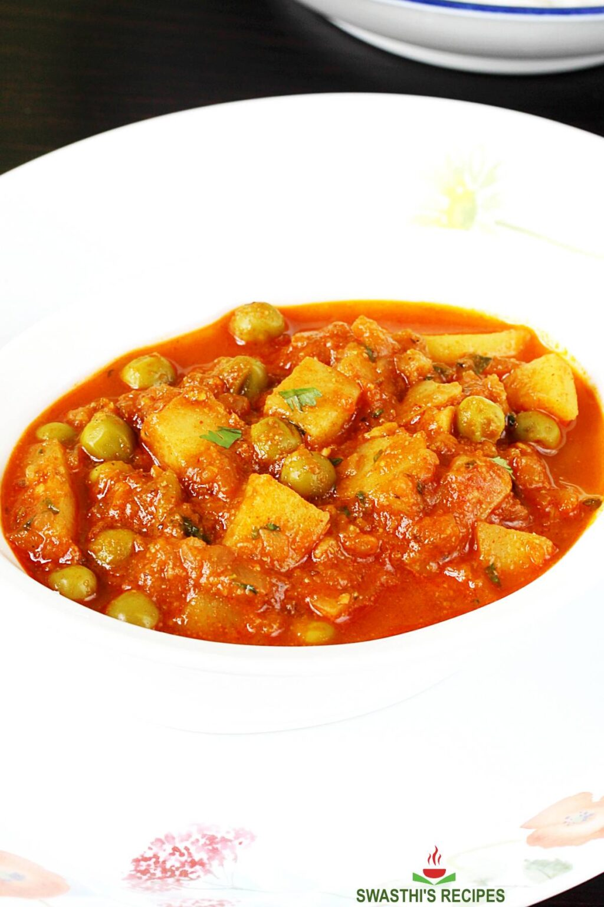

Aloo Matar

Description
This is an indian vegetarian dish, containing common indian spices, as well as diced potatoes, tomatoes and peas.
Ingredients
- 250 grams potatoes (3 medium potatoes, cubed to 1 inch)
- ½ to ¾ cup green peas (fresh or frozen)
- 100 grams onions (¾ cup, chopped finely, 1 large)
- 200 grams tomatoes (1 cup chopped or pureed, 3 medium)
- 2 tablespoons oil
- 1 green chili slit or chopped
- ½ to ¾ teaspoon cumin seeds (Jeera)
- tablespoon ginger garlic paste (or ¾ tbsp fine chopped each)
- 1 teaspoon coriander powder (ground coriander seeds)
- ¾ teaspoon red chilli powder (adjust to taste)
- ½ to ¾ teaspoon garam masala
- ½ to ¾ teaspoon salt or as needed
- ¼ teaspoon turmeric
- ½ to 1 teaspoon kasuri methi (dried fenugreek leaves) (skip if you do not have)
- 3 tablespoon coriander leaves chopped finely
How to make Aloo Matar
- Heat oil in a cooker, pan or kadai. Saute cumin till they begin to crackle.
- Add chopped onions, green chili and fry until lightly golden or pink.
- Next put in the ginger garlic paste and saute until the raw smell disappears.
- Add tomato puree and saute for 2 mins.
- Next add chili powder, garam masala, coriander powder, turmeric and salt.
- Saute until oil begins to separate from the masala.
- Add potatoes and peas. Saute for 2 mins.
- Add water just enough to cover the potatoes. Cook covered on a low to medium heat.
- Stir in between a few times, cook until the potatoes turn soft. You can adjust the consistency by adding more water as needed.
- If making in pressure cooker then, allow to whistle twice on a medium heat.
- Add kasuri methi and mix well. Adjust salt if needed.
- Serve aloo matar with rice or roti.